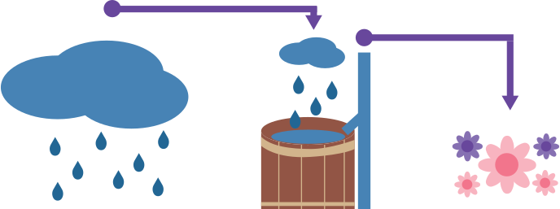
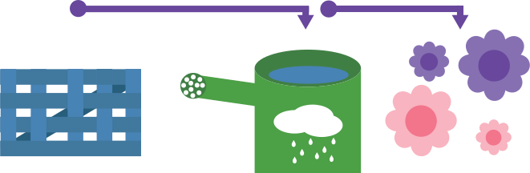
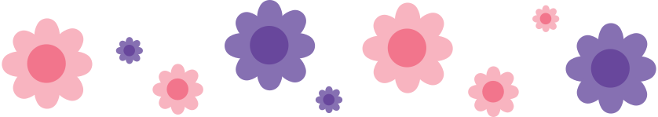

Waterton
Een regenton is een ton die je aan kun sluiten op je regenpijp. De regenton vangt het regenwater op, waardoor je dit vervolgens kunt gebruiken om bijvoorbeeld je planten water te geven. Dit helpt water te besparen en is beter voor de planten.
Een regenwaterschutting is een schutting die de regenton vervangt. Je sluit de regenwaterschutting aan op de kraan en vult er je gieter mee. Hiermee kun je ook je planten water geven en dus water besparen.
